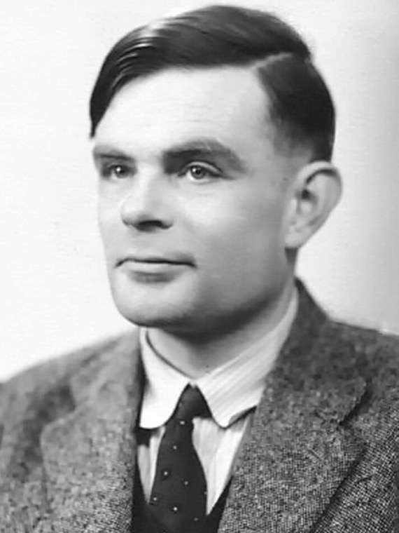
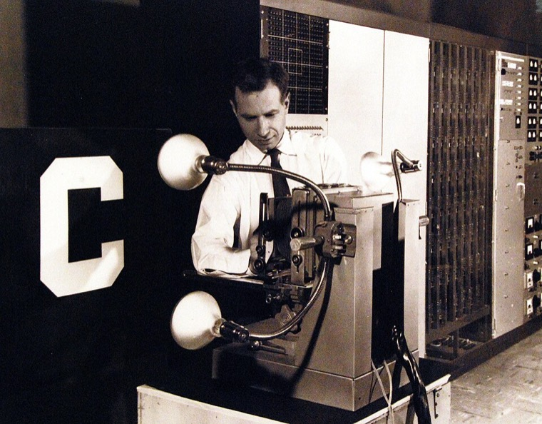
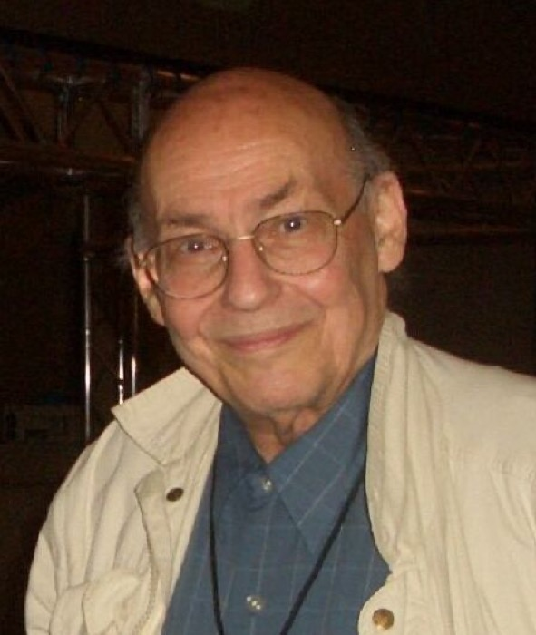
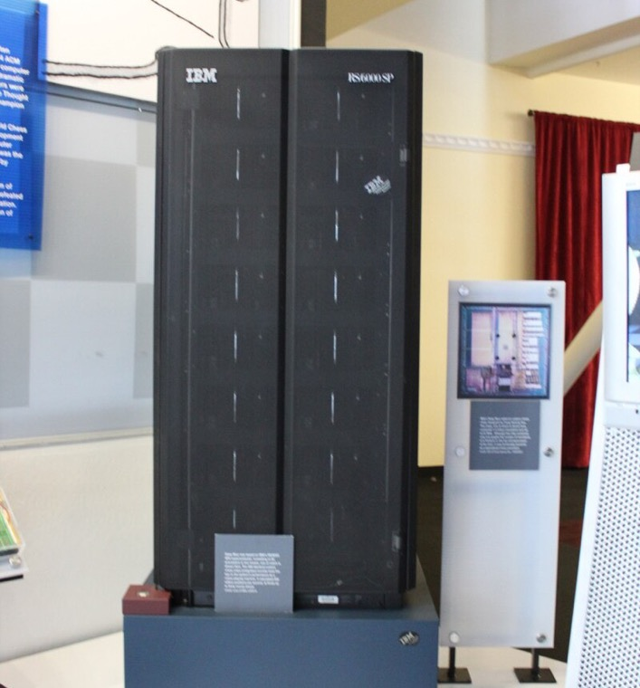
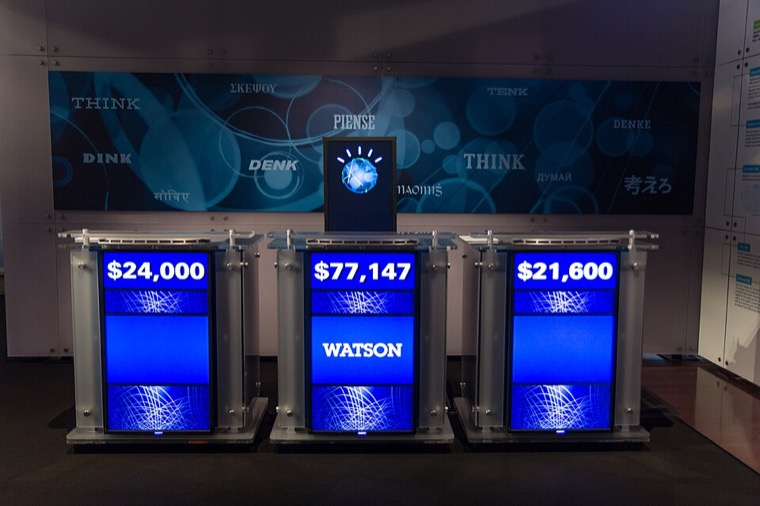
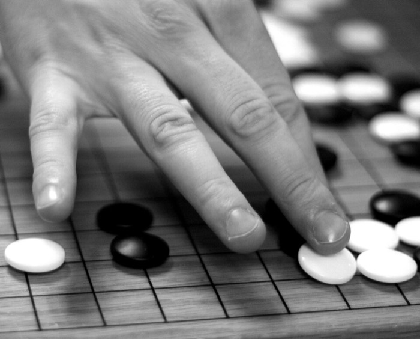

Règle « ET »la lampe s’allume si les deux interrupteurs le sont
| A | B | lampe |
|---|---|---|
| éteint | éteint | éteinte |
| allumé | éteint | éteinte |
| éteint | allumé | éteinte |
| allumé | allumé | allumée |
Une droite suffit : le neurone y arrive.
Cette présentation répond à quatre questions : est-ce qu’elle comprend ce qu’elle dit ? est-ce qu’elle peut se tromper ? est-ce qu’elle apprend comme toi ? est-ce qu’elle pense ?
Rien de nouveau, sauf la puissance
Enthousiasme, déception, retour
Courbe d’ambiance : elle montre l’enchaînement des périodes, pas une mesure chiffrée.
1958 · l’ancêtre de tout le reste
Quelques centaines d’essais suffisent. Personne n’a écrit la règle : elle a fini par se loger dans les poids.
1966 · le premier robot de conversation
ELIZA · 1966
Exemple d’échange : « Je suis triste. » — « Pourquoi êtes-vous triste ? » — « À cause de l’école. » — « Parlez-moi de l’école. » — « Personne ne m’écoute. » — « Pourquoi dites-vous que personne ne vous écoute ? »
Son auteur, Joseph Weizenbaum, en fut inquiet toute sa vie : nous prêtons une intention à ce qui n’en a pas.
1969 · la démonstration qui gèle tout
Un neurone additionne et compare à un seuil : sur un dessin, cela revient à tracer une droite et à demander de quel côté tombe le point.
| A | B | lampe |
|---|---|---|
| éteint | éteint | éteinte |
| allumé | éteint | éteinte |
| éteint | allumé | éteinte |
| allumé | allumé | allumée |
Une droite suffit : le neurone y arrive.
| A | B | lampe |
|---|---|---|
| éteint | éteint | éteinte |
| allumé | éteint | allumée |
| éteint | allumé | allumée |
| allumé | allumé | éteinte |
Les allumés sont en diagonale : aucune droite ne passe.
Minsky et Papert le démontrent en 1969. La solution existait — empiler deux couches — mais nul ne savait les entraîner.
Années 1980 · le retour des règles
Second hiver. La leçon : ce qu’on ne peut pas écrire, il faut le faire apprendre.
1986 · la clé qui manquait
Le plat est trop salé : le reproche remonte la chaîne des cuisiniers, et chacun en reçoit sa part.
La méthode existe donc en 1986. Il manque des montagnes d’exemples et des machines rapides : elles arriveront ensemble, vingt-six ans plus tard.
Une rencontre, pas une invention
Aucune des trois ne suffisait seule. C’est leur rencontre qui a réveillé l’idée de 1958.
Le vocabulaire à retenir
Toutes les machines de la première partie apprenaient de la même manière : on leur montrait des exemples accompagnés de la bonne réponse. Ce n’est qu’une des trois façons — et AlphaGo, en 2016, en utilisait une autre.
On donne l’exemple et la bonne réponse. La machine apprend à relier les deux.
Reconnaître un chat, corriger une phrase.
Aucune réponse fournie. La machine cherche seule des groupes et des régularités.
Regrouper des clients, repérer une anomalie.
Ni exemple ni réponse : seulement une récompense quand le résultat est bon.
Jouer au go, piloter un robot.
Aucune des trois ne comprend ce qu’elle fait. Toutes les trois finissent par y arriver.
Le plus petit morceau
Le neurone multiplie chaque mesure par un poids, additionne le tout, puis regarde si le résultat dépasse zéro.
Un poids positif tire vers « banane », un poids négatif vers « pomme ». Entraîner, c’est chercher les bons poids — et c’est exactement ce que fait la machine de 1958.
Atelier 1 · apprentissage supervisé
Dix fruits, placés selon leur longueur et leur largeur. Le neurone doit trouver une droite qui sépare les bananes des pommes. Il part au hasard, puis se corrige.
À chaque tour, le neurone examine les dix fruits. Quand il se trompe, il déplace un peu sa frontière.
Les poids de départ sont pris au hasard : la frontière est n’importe où.
Atelier 2 · apprentissage non supervisé
Quarante-cinq points, et aucune étiquette : personne n’a dit lesquels vont ensemble. On demande trois groupes, la machine les trouve seule.
Chaque point rejoint le centre le plus proche, puis chaque centre se replace au milieu de ses points. Un clic = un geste.
Au départ, les trois centres sont posés au hasard et aucun point n’appartient à un groupe.
Atelier 3 · apprentissage par renforcement
Le robot part en haut à gauche et cherche la sortie, sans carte. Un piège lui coûte un point. Après cinquante parties, regarde les flèches apparaître.
Atteindre la sortie rapporte un point, tomber dans un piège en coûte un. Le robot ne reçoit rien d’autre : ni carte, ni consigne.
Mémoire vide : le robot se déplacera complètement au hasard.
Le mot « profond » expliqué
Un neurone seul ne trace qu’une droite — le mur de 1969. Empilés par millions, ils découpent n’importe quelle forme.
Atelier 4 · voir une image
Pour « voir », la première couche promène une fenêtre de neuf cases sur l’image et calcule à chaque position une somme de neuf multiplications. Le résultat forme une nouvelle image : une carte de ce que le filtre a trouvé.
Ici j’ai choisi les neuf nombres pour que ce soit lisible. Dans un vrai réseau, ce sont des poids trouvés par l’entraînement, comme ceux du premier atelier.
Atelier 5 · du texte aux nombres
Avant tout calcul, le texte est coupé en jetons, et chaque jeton devient un nombre. Écris ta phrase :
Découpage simplifié pour la démonstration : les vrais modèles utilisent un dictionnaire de morceaux appris sur des textes. Tout ce qui suit se passe sur ces jetons, jamais sur des mots entiers.
Atelier 6 · une seule opération
Le modèle ne fait que cela : proposer les mots possibles avec leur probabilité, puis en choisir un. Clique pour choisir à sa place.
On écrit ici des mots entiers pour rester lisible : le modèle, lui, empile les jetons découpés juste avant. Les probabilités sont choisies pour la démonstration — un vrai modèle en calcule des dizaines de milliers à chaque jeton.
Le modèle propose plusieurs suites, chacune avec sa probabilité. Clique pour en choisir une.
Atelier 7 · l’invention de 2017
« Attention Is All You Need », 2017 : chaque mot d’une phrase va chercher les mots dont il a besoin. Clique sur n’importe quel mot souligné pour voir où il va chercher son sens.
Ce sont les jetons qui se regardent, pas les mots : on affiche des mots entiers pour que la phrase reste lisible. Poids choisis pour la démonstration ; un vrai modèle en calcule des milliers par couche, et personne ne les a écrits.
Le mot à connaître
Exemple de phrase produite mot à mot : « Un modèle de langage écrit chaque mot en regardant tous les précédents. »
un jeton, puis le suivant, puis le suivant…
Les images, tout autrement
De la neige au dessin, en une trentaine d’étapes. Rien n’est copié : l’image n’existait pas avant d’être débruitée.
On part du hasard : deux essais avec la même phrase ne donnent jamais la même image.
La machine, pièce par pièce
Dans un modèle comme Stable Diffusion, quatre pièces travaillent à la suite. Et le débruitage ne se fait jamais sur l’image finale.
Pourquoi « latent » ? Le débruitage travaille sur quelques milliers de cases, pas sur les millions de pixels de l’image. C’est mille fois moins de calcul.
Pourquoi ça tourne chez toi ? Justement parce que le gros du travail se fait en petit. Dès 2022, ces modèles ont pu être téléchargés et lancés sur un ordinateur ordinaire.
Pourquoi jamais deux fois la même ? Parce qu’on part d’un tirage de bruit au hasard. Même phrase, autre bruit, autre image.
Ce qu’on ne voit jamais
Un modèle nu ne sait que continuer du texte. Chercher, calculer, se souvenir, refuser : tout cela vient de ce qu’on attache autour. On appelle cela le harnais.
Tu ne parles donc jamais au modèle. Tu parles à tout ce qu’on a attaché autour.
Répondre ne suffit plus
C’est pour cela qu’un agent demande une autorisation avant les actions qu’on ne peut pas annuler.
Quand un seul ne suffit plus
Sur une tâche longue, un agent seul traite tout à la suite et sa mémoire de travail se remplit. Alors il découpe le travail et le confie à des sous-agents.
Le revers : le principal ne voit que des résumés. Ce qu’un sous-agent a jugé secondaire est perdu.
Où en est-on
Le modèle écrit d’abord un brouillon de raisonnement, puis répond. Plus de temps de calcul, de meilleures réponses sur les problèmes difficiles.
Un même modèle lit du texte, regarde une image, écoute du son. Les jetons ne viennent plus seulement de l’écrit.
Des documents entiers tiennent dans une seule requête. Le modèle peut relire tout un livre avant de répondre.
Ils cliquent, écrivent des fichiers, lancent des programmes. Ils n’écrivent plus seulement du texte : ils agissent.
Certains se téléchargent et tournent sur ses propres machines, à côté des modèles fermés loués par abonnement.
Le principe reste celui de 1958 : des poids réglés par l’erreur. Ce sont l’échelle, le harnais et l’usage qui bougent.
Le piège principal
Même question, deux réponses. Regarde-les s’écrire : même vitesse, même aplomb.
Réponse juste
Exact.
Réponse inventée
Faux, et dit du même ton.
Le modèle cherche la suite la plus vraisemblable, jamais la plus vraie. Seule la vérification tranche.
Atelier 8 · le biais des données
Cette IA classe un animal en cherchant l’exemple connu dont la taille est la plus proche. Change ses exemples, garde le même animal.
Les deux jeux d’exemples sont exacts. L’un est seulement incomplet.
La règle de calcul ne change jamais entre les deux essais. Seuls les exemples changent.
Remettre l’outil à sa place
Un outil très fort pour produire du texte, et un très mauvais juge de la vérité.
Ce que tu comprends
Ce qu’elle reçoit
Le coût qu’on ne voit pas
Deux dépenses de nature différente : entraîner le modèle une fois, puis répondre à des milliards de questions.
Schéma de principe. Les chiffres publiés varient beaucoup selon les modèles et les méthodes de calcul : on montre ici la forme du coût, pas une mesure.
La question à se poser avant d’envoyer une requête : est-ce que j’en avais besoin ?
Atelier 9 · faire le tri
Certaines craintes sont constatées, d’autres se discutent, d’autres relèvent de la fiction. Classe-les.
Des images et des voix truquées trompent des gens.
Très peu d’entreprises contrôlent cette technologie.
Ces outils vont détruire plus d’emplois qu’ils n’en créent.
À force de déléguer, nous perdrons des compétences.
Une IA décidera d’elle-même de nuire aux humains.
La question qui reste
Usage passif
On se déplace à la même vitesse, sans fournir d’effort. L’outil réalise l’intégralité du travail à notre place.
Usage actif
On marche sur le tapis : à effort égal, on avance beaucoup plus vite et on va plus loin.
Usage entraînement
Tapis de salle de sport : il ne sert pas à se déplacer, mais à devenir plus performant et autonome.
Aucun des trois n’est interdit. Un seul te rend autonome. Lequel choisis-tu pour ton prochain devoir ?
Atelier 10 · contrôle rapide
Une IA garde en mémoire tous les textes qu’elle a lus.
Une machine peut apprendre sans qu’on lui donne aucune bonne réponse.
Les réseaux de neurones ont été inventés il y a une dizaine d’années.
Une IA peut donner une réponse fausse avec un ton parfaitement assuré.
Un modèle de langage sait chercher sur Internet tout seul.
Si les exemples d’entraînement sont incomplets, l’IA se trompera.
Le minimum à emporter
Elle apprend avec des exemples ou des récompenses.Personne ne lui écrit les règles : elle les trouve en corrigeant ses erreurs, comme en 1958.
« Profond » veut dire « à beaucoup de couches ».Chaque couche repère quelque chose d’un peu plus gros que la précédente.
Un modèle de langage devine, mot après mot.L’attention lui permet de relire la phrase entière avant chaque mot.
Le modèle nu ne fait rien.Chercher, calculer, se souvenir, agir : tout cela vient du harnais qu’on lui attache.
Trois usages du tapis roulant, un seul choix.Passif, il travaille à ta place. Actif, tu vas plus loin. Entraînement, tu deviens autonome.
D’où viennent les images

Alan Turing, 1951Photographie d’Elliott & Fry domaine public
Mark I Perceptron, 1958National Museum of the U.S. Navy domaine public
Marvin MinskyPhotographie de David Orban CC BY 2.0
IBM Deep BluePhotographie d’Anton Chiang CC BY 2.0
Watson au jeu Jeopardy!, 2011Photographie d’Atomic Taco CC BY-SA 2.0
Plateau de goPhotographie de Luis de Bethencourt CC BY 2.0Institut Florimont · 2026–2027 · Yann Houry